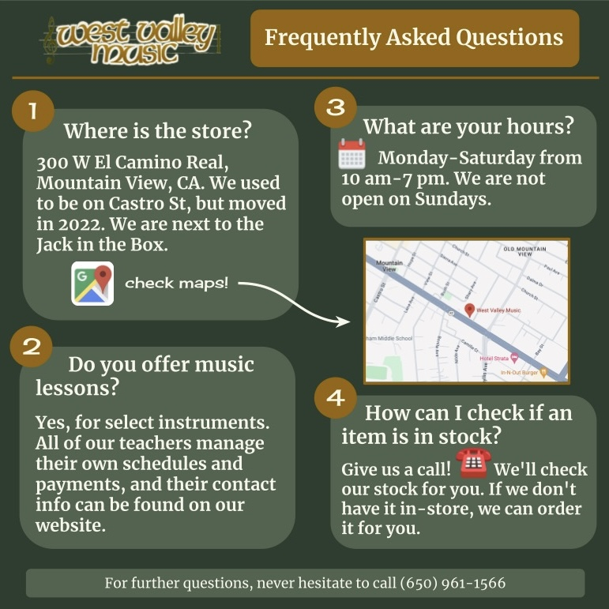
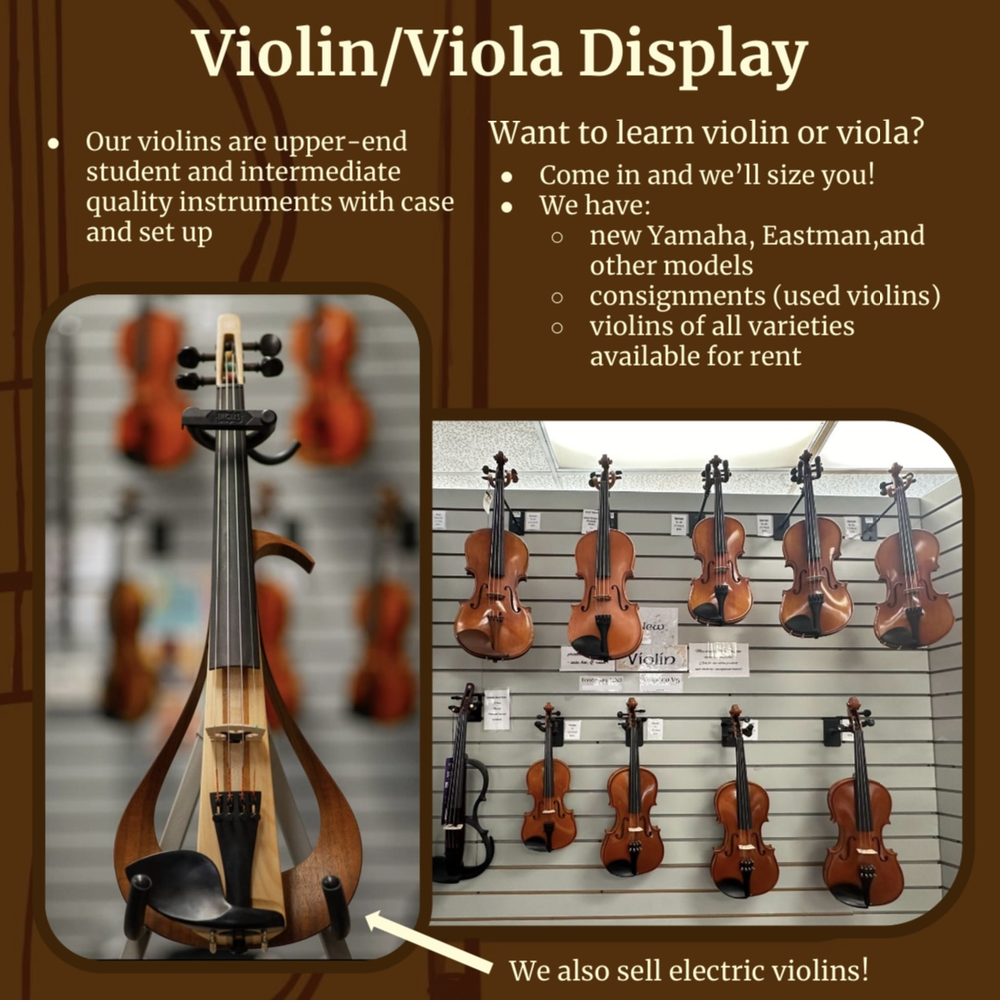
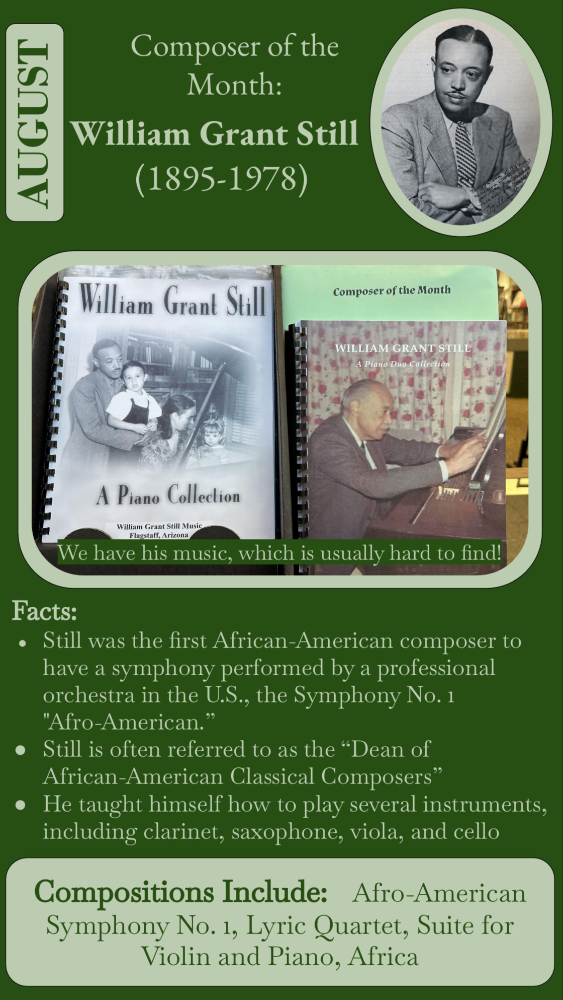
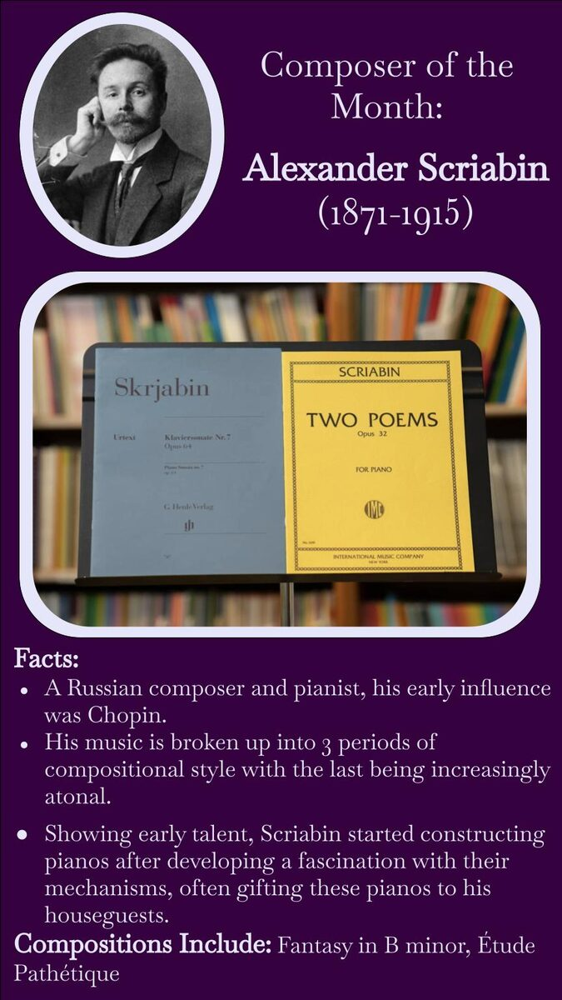
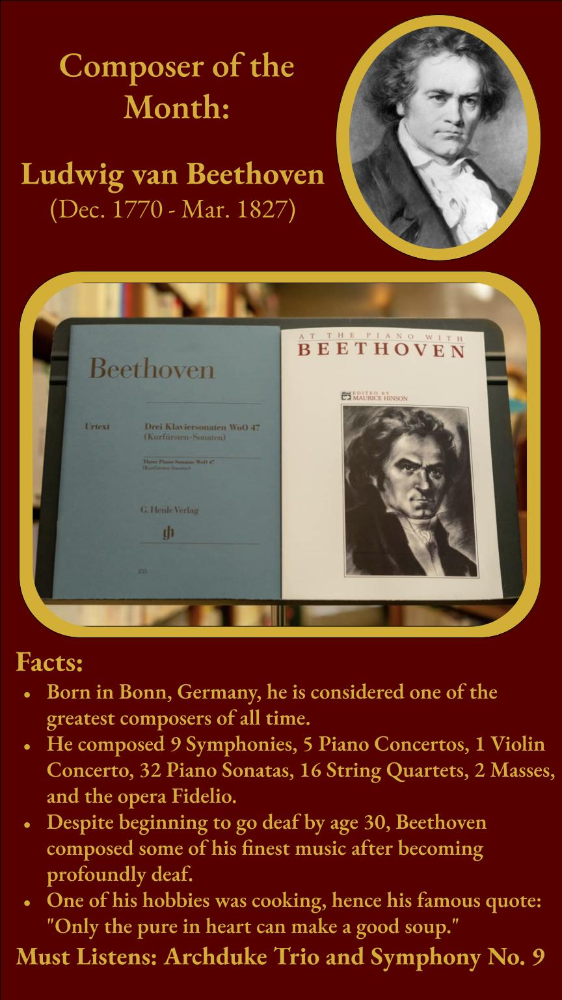

Designed and produced social ads and posts for a Mountain View instrument retailer, while running day-to-day rentals, sales, and customer service.
West Valley Music serves musicians of all ages across the South Bay — students renting their first instrument, parents outfitting a school band kid, and working musicians looking for repairs and gear. My role covered both the storefront and its online presence: producing the social content that brought people in the door, and handling the rentals, sales, and service that kept them coming back.
Designed and produced a steady stream of social content, strengthening brand consistency and visibility across channels.
Grew viewership and customer engagement by 75% in the first month through targeted, consistent content creation.
Beyond content creation, I managed customer service, rentals, sales, and basic instrument maintenance — meaning the marketing I made was directly informed by the questions and needs I saw at the counter every day.
Informational posts designed to answer common customer questions and highlight in-store inventory.

FAQ Post
Violin/Viola Display PostA recurring monthly feature I designed to highlight a different composer's life and work.

August — William Grant Still
Composer of the Month — Alexander Scriabin
Composer of the Month — Beethoven